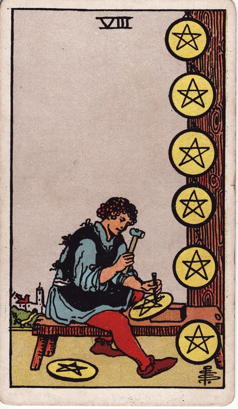

READING
副業を始めるか迷うとき、始める前に確かめたい5つのこと
（更新 ） ・ DECIDE. 編集部

副業のまとめ記事を何本も読みました。始めた人の体験談も見ました。それでも、自分の最初の一歩はまだ決まっていません。「時間は作れるのか」「本業に響かないか」「自分に何ができるのか」。考えるほど不安が増えて、「また今度」になる。この繰り返しに、心当たりはないでしょうか。
先に言っておくと、このページのゴールは「副業を始めるべき」と背中を押すことではありません。ゴールは、始めるにしても見送るにしても、確かめるべきことを確かめたうえで、自分で決めたと言える状態にすることです。不安の正体が分かれば、迷いはずっと小さくなります。
この記事では、始める前に確かめておきたい5つのことを整理します。カードはうまくいくかを占うものではなく、自分の考えを別の角度から見直すための道具として使います。
副業に迷うのは、慎重に考えている証拠
副業で迷う理由は、だいたい次のようなものです。
- 本業が忙しく、続けられるか自信がない
- 何から始めればいいのか、自分に何ができるのかわからない
- 会社の規定や税金など、手続きの面が気になる
どれも、真剣に考えているからこそ出てくる不安です。勢いだけで始めるより、こうした不安を一つずつ確かめてから始める方が、結果的に長く続けやすくなります。
確かめたいこと1: なぜ副業をしたいのか
副業の目的は人によって違います。
- 収入を増やしたい
- 本業では得られないスキルや経験を積みたい
- いずれ独立するための準備をしたい
- 好きなことを、小さくでも仕事にしてみたい
目的によって、選ぶべき副業の種類も、どのくらいの時間をかけるべきかも変わります。「なんとなく不安だから」という気持ちも大事な出発点ですが、もう一歩だけ言葉にしておくと、迷ったときの判断軸になります。
確かめたいこと2: 地道に続ける時間を確保できるか
ペンタクルの8は、職人が一つひとつ丁寧に作品を仕上げている姿で描かれます。キーワードは「修練」「集中」「地道な努力」。
副業は、始めてすぐに成果が出ることはあまり多くありません。ペンタクルの8の視点で、自分に問いかけてみます。
毎週どのくらいの時間を、この副業に使い続けられるだろう。それを半年続ける自分を想像できるだろうか。
週に何時間なら無理なく続けられるか、平日の夜なのか週末なのか、具体的に書き出してみてください。睡眠や家族との時間を削りすぎる計画は、長続きしにくくなります。
確かめたいこと3: 本業や会社の規定に問題はないか
副業を始める前に、手続き面も確認しておきましょう。
- 勤務先の就業規則で、副業が認められているか
- 本業と競合する内容になっていないか
- 収入が出た場合の確定申告など、税金の扱いを把握しているか
細かな条件は会社や状況によって異なるため、就業規則を確認したり、必要に応じて専門家に相談したりしてください。ここをあいまいにしたまま始めると、あとで大きな不安の種になります。
確かめたいこと4: 小さく試して、途中で見極められるか

ペンタクルの7は、育ちつつある作物を前に手を止めて見つめる姿のカードです。キーワードは「見極め」「成長を待つ」「中間評価」。
副業は、最初から大きく始める必要はありません。
- まずは1か月だけ、小さく試してみる
- 3か月後に、続けるか・やり方を変えるか・やめるかを見直す
- 見直しのときは、収入だけでなく「楽しさ」や「学び」も評価に入れる
「やめてもいい」と最初から決めておくと、始めるハードルがぐっと下がります。
確かめたいこと5: その先の展望を描けるか

ワンドの2は、地球儀を手に遠くを見渡す人物の姿で、キーワードは「計画」「展望」「決断」です。
副業を続けた先に、どんな自分がいたらうれしいかを想像してみてください。収入の柱が一つ増えている自分、新しいスキルで本業でも頼られている自分、独立という選択肢を持てている自分。展望が描けると、目の前の地道な作業にも意味を感じやすくなります。
試した結果を、記録で見極める
小さく試すやり方で一番大事なのは、見直しの日に「感覚」で判断しないことです。始めた直後の手応えは、当日の気分に大きく左右されます。
だから、試している期間のことを記録に残してください。使った時間、出た収入、楽しかったか・しんどかったか。見直しの日にその記録を開けば、「続ける・変える・やめる」の判断が、勢いや後悔ではなく事実に基づいてできます。決断の記録が積み上がるほど、自分の「続けられる形」が見えてきます。副業の決断は一度きりではなく、小さな見直しの積み重ねです。その積み重ねを支えるのが記録です。
最後に
副業を始めるかどうかに、誰にとっても正しい答えはありません。大切なのは、目的、時間、規定、試し方、展望を一つずつ確かめて、自分なりに納得して決めること。そして始めたら、記録を見ながら見直していくこと。「また今度」を卒業する一歩は、その確かめ作業から始まります。